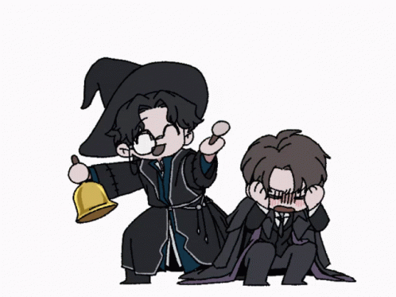

Broken World
About
Hello!
Its a simple about section this website
What will you find?
On this page, there are a good ammount of files for my custom Lord of the Mysteries fanon;
Including but not limited to:
- New characters
- Changed events
- A custom pathway and a Sefirot
There are also visual feature such as:
- The relationship web
- The event timeline.
- The pathway lines, with switches shown.
Have fun and read the original novel!

Your Gods blessing has kept you alive so far, but a blessing is just a loan, and I always collect.